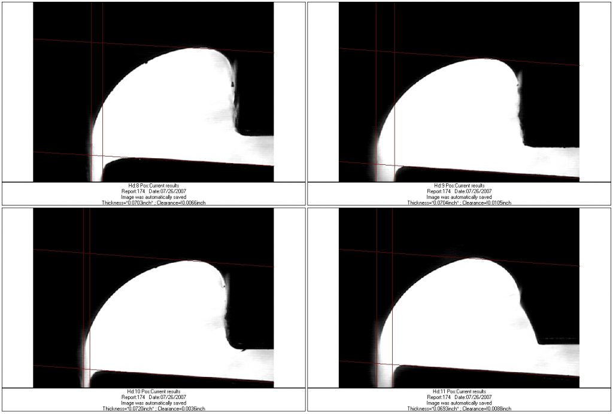
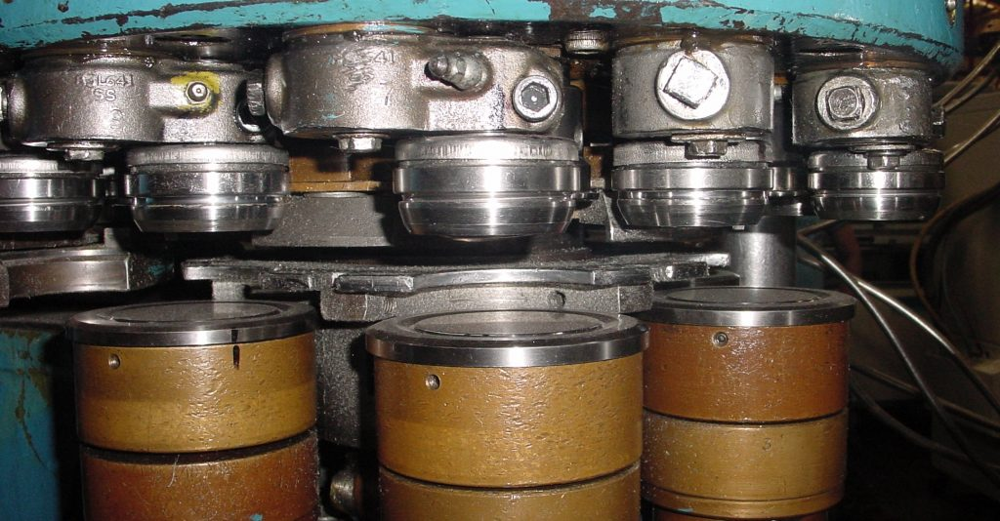
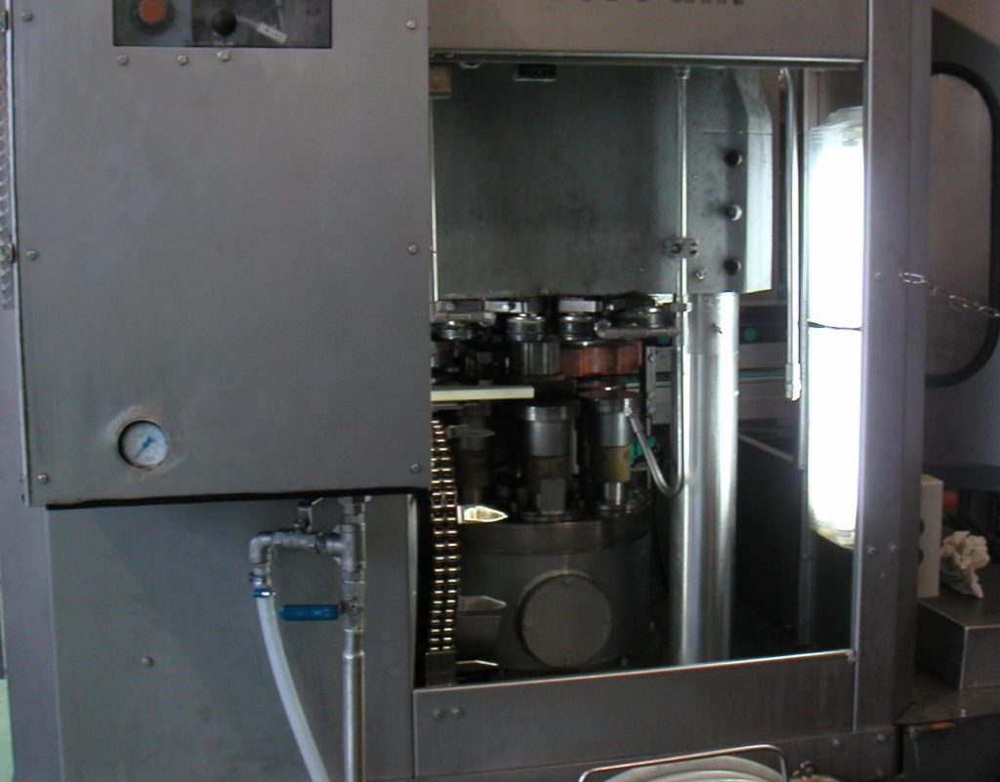
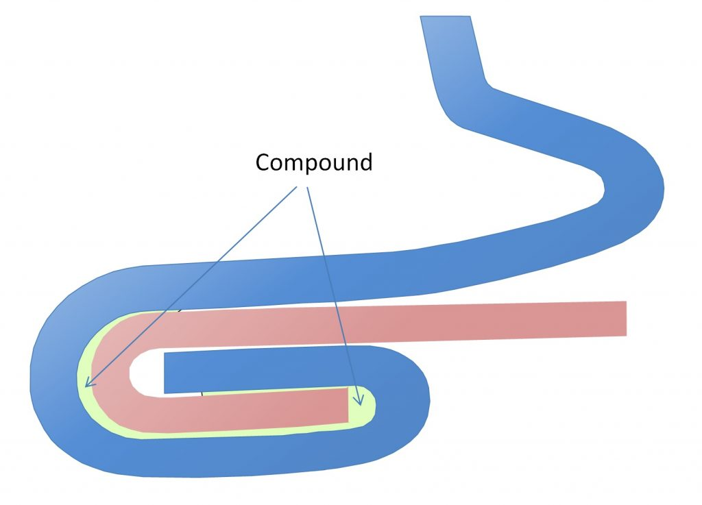
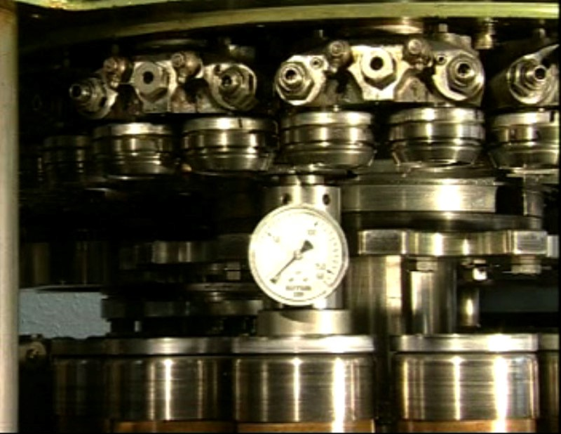
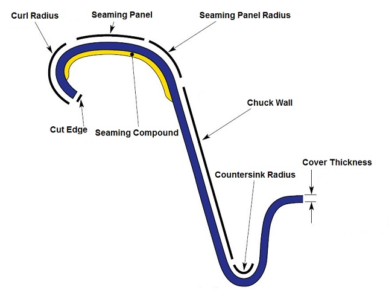
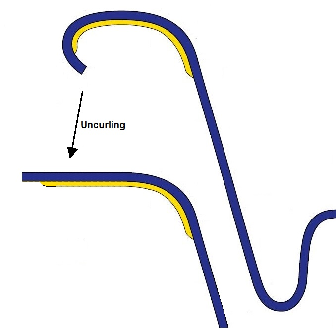
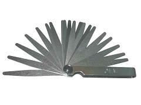
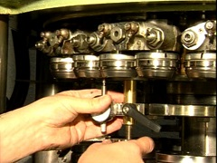
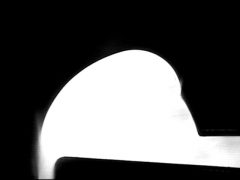

📚 Terminologia
Glossário de equipamentos, ferramentas e termos técnicos da recravação de latas.

Chuck (Mandril)
O chuck e o mandril que suporta a tampa durante o processo de recravação.

Rolo de recravação (Roll)
O rolo de recravação e a ferramenta que forma a recravação.

Rolo da Primeira Operação
O rolo da primeira operação inicia o processo de formação da recravação.

Rolo da Segunda Operação
O rolo da segunda operação finaliza a compressão da recravação.

Recravadeira (Seamer)
A máquina utilizada para fechar latas por meio da recravação dupla.

Cabeça da Recravadeira
A cabeça da recravadeira contém o chuck e os rolos de recravação.

Compound (Vedante)
O compound e o material selante aplicado no curl da tampa para garantir a hermeticidade.

da Placa Elevadora
A pressão da placa elevadora mantém a lata estável durante a recravação.

Lip do Pino
O lip do pino e a borda inferior do chuck que forma o afundamento na tampa.

Aperto da recravação (Tightness)
O aperto da e avaliado pela das rugas e pela com do compound.

Descurl (Uncurling)
O processo de descurl remove o curl da tampa para análise da recravação.

Desmoldagem da Lata (Stripping)
O processo de retirar a lata do chuck após a recravação.
Micrômetro de Recravação
Instrumento de medição utilizado para medir as dimensões externas da recravação.

Calibrador de Folga (Feeler Gauge)
Ferramenta utilizada para medir o ajuste do rolo em relacao ao chuck.

Calibrador de Altura do Pino
Instrumento para ajustar e verificar a altura do pino da recravadeira.

Calibrador de Altura do Rolo
Instrumento para ajustar e verificar a altura do rolo da recravadeira.

Ferramental Danificado
Como identificar e lidar com ferramental danificado na recravadeira.
Rolamento Danificado
Rolamentos danidanificados causam instabilidade e defeitos na recravação.

Ferramental de Recravadeira Danificado
Identificacao de ferramental danificado na recravadeira e suas consequencias.

21 CFR 11 / FDA
Requisitos regulatorios do FDA para controle e registro de dados de qualidade.